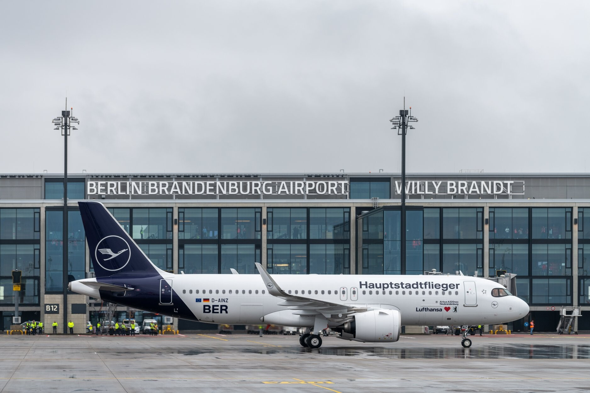
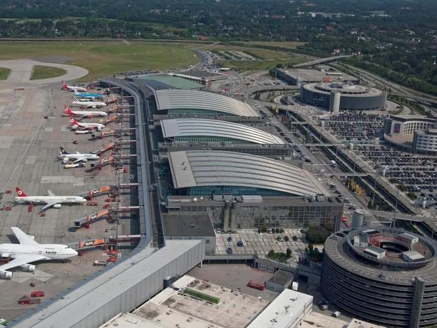

Аэропорты Германии

Flughafen Berlin Brandenburg (BER)
полет
Flughafen Frankfurt am Main (FRA)
полет
Flughafen München (MUC)
полет

Flughafen Hamburg-Fuhlsbüttel (HAM)
полет
Flughafen Düsseldorf (DUS)
полет
Flughafen Hannover (HAJ)
полет
Flughafen Nürnberg (NUE)
полет